Web Panel¶
ggCON includes a built-in web panel for managing your SCUM server from any browser. No additional software or setup is required — the panel is served directly by ggCON.
Accessing the Panel¶
For GG Host servers, the quickest way is the ggCON Web Panel shortcut in the left sidebar of your game panel — it logs you in automatically.
You can also access the panel directly over HTTPS:
Bookmarkable login
You can include your password in the URL for one-click access: https://ggcon.gghost.games/s/<panelId>/panel?pw=yourpassword. The password is stripped from the browser's address bar after login.
You will be prompted to enter your ggCON password (the value stored in your ggcon_password file).
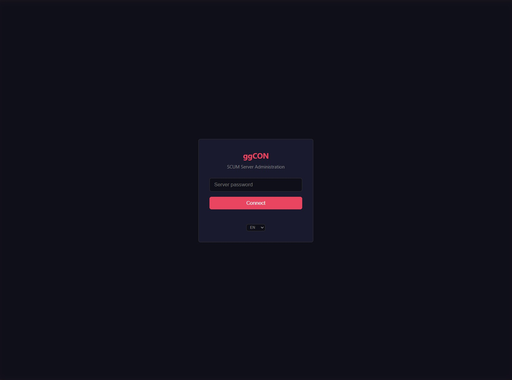
Note
The panel uses the same IP allowlist and password authentication as the HTTP API. If you cannot reach the panel, verify your IP is in the AllowedIPs or AllowedCIDRs list, or that AllowAllIPs is enabled. When using the SSL proxy, IP allowlists apply to the original client IP.
Navigation¶
The panel uses a collapsible sidebar for navigation. All core tabs have SVG icons. Plugin tabs appear under a "Plugins" divider with a puzzle-piece icon.
- Collapse toggle — click the arrow at the bottom of the sidebar to switch between full labels and icon-only mode. Your preference is saved across sessions.
- Tab order — Status (default landing page) → Map → Players → Squads → Vehicles → Flags → Chat → Logs → Console → Settings. Plugin tabs can be reordered by dragging.
- Update indicator — the Settings button shows a colored dot when an update is available: green for minor updates, orange for major updates, blue when an update is staged.
Real-time updates¶
The panel receives live data via Server-Sent Events (SSE). Player positions, chat messages, logs, server status, weather, squads, vehicles, and flags all update in real-time with no manual refresh needed. If SSE is unavailable (e.g., older ggCON versions), the panel falls back to polling automatically.
When the server goes offline, the panel detects it within seconds and shows a branded "Server is offline" splash screen. It reconnects and refreshes all data automatically when the server comes back.
Time display toggle¶
A toggle in the header bar lets you switch all timestamps between your local time and the server's time. Both sides show their UTC offset so you can always see the difference. The toggle affects all timestamps across the panel: chat, logs, player last login/logout, FPS chart labels, and plugin timestamps. Your preference is saved to localStorage.
Tabs¶
Status¶
The default landing page. Shows server information and live controls:
- SCUM version and ggCON version with build timestamp
- Online player count
- Live FPS (current, average, minimum)
- Time of day, weather conditions
- Temperature, wind, humidity, fog, cloud coverage
Server controls:
- Time slider — drag to set the time of day (0–23 hours) with day/night icons
- Weather slider — drag to set weather intensity (0–1) with sun/storm icons
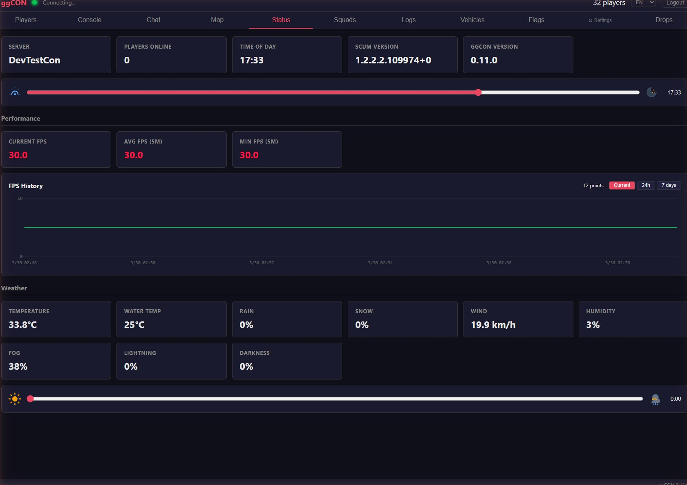
Players¶
Lists all online players with sortable columns. Use the "Online / All Players" toggle to switch between online-only and a full search of every player who has ever connected (including offline players).
The "All Players" mode queries the server database and supports search by name or Steam ID. Offline player cards show last login/logout, economy data, and a "Show on Map" button for their last known position.
| Column | Description |
|---|---|
| Name | SCUM in-game character name |
| Steam | Steam profile name |
| Steam ID | 64-bit Steam ID (clickable — opens Steam profile) |
| Fame | Fame points |
| Ping | Network latency |
| Flags | Admin, God Mode, Immortal, Dead, Drone badges |
| Actions | MSG (send message) and #ExecAs (run command as player) |
Click any player row to open a detailed popup.
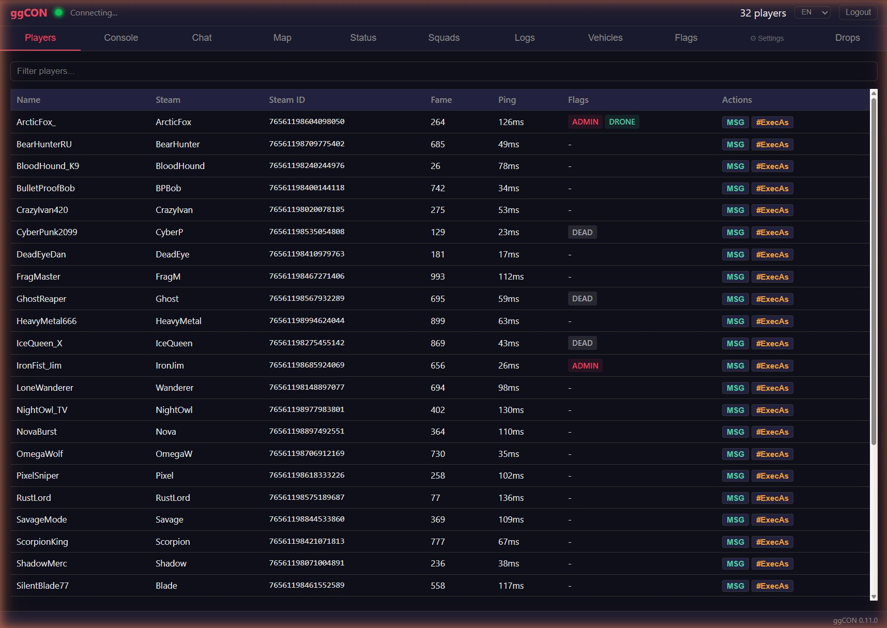
Player Detail Popup¶
Click a player in the list or on the map to see full details:
- Online/offline indicator — green glowing dot for online players, red glowing dot for offline players
- Character — health bar, movement speed (m/s), item in hands, gender, gear weight
- Connection — ping, IP address
- World — world coordinates, map location
- Economy — fame (with level), cash balance, gold balance — each with inline edit buttons (Set, +, -)
- Conditions — active body effects with severity (exhaustion, illness, etc.)
- Skills & Attributes — 27 skills grouped by attribute (Strength, Constitution, Dexterity, Intelligence) with level and XP; base attribute values displayed as headers
- Squad — if the player belongs to a squad, the squad name is shown and clickable (navigates to the Squads tab)
- Steam Profile — clickable Steam ID link opens the player's Steam profile
Actions:
- Send Message — send a private in-game message to the player
- #ExecAs — execute a command in the context of the player
- Give Item — opens the item picker to spawn items for the player (see Give Item)
- Give Vehicle — opens a vehicle picker to spawn any of the 19 vehicle types directly to the player (see Give Vehicle)
- Spawn Entities — opens a tabbed picker to spawn zombies, animals, armed NPCs, Brenner, or Razor near the player (see Spawn Entities)
- Show on Map — switches to the Map tab and flies to the player's location
- Teleport To... — opens the map in teleport mode (see Teleport from Map)
- Kick — kicks the player from the server (with confirmation dialog)
- Ban — bans the player from the server (with confirmation dialog)
The popup updates in real-time as new data is polled from the server.
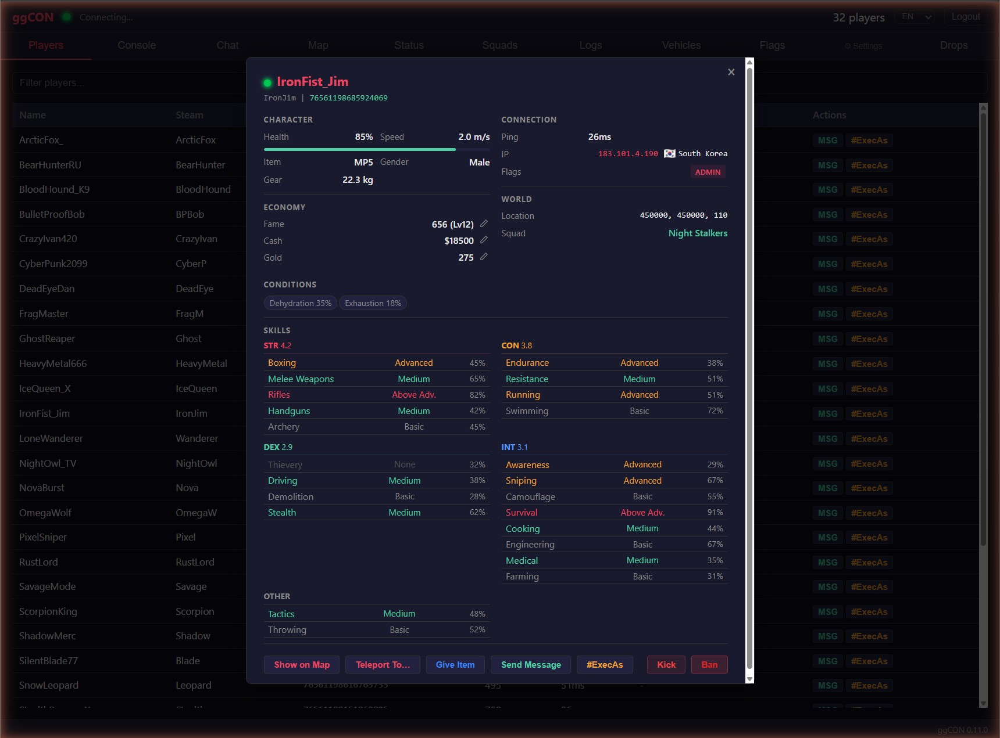
Economy Controls¶
Each economy field (Fame, Cash, Gold) has inline edit buttons:
- Set — set to an exact value
- + — add an amount
- - — subtract an amount
Enter the value and confirm. The change is applied immediately via the REST API.
Offline Player Card¶
Clicking any player name throughout the panel (in the Flags, Vehicles, or Squads tabs) when that player is not currently online opens a minimal player card with available information:
- Player name and Steam ID
- Online/offline status indicator (red dot)
- Owned flags and flag count
- Owned vehicles
- Squad membership
This allows you to look up player details even when they are not connected to the server.
Console¶
Interactive admin command console. Type any SCUM admin command and see the response.
- Autocomplete — commands are suggested as you type; press Tab, Enter, or click to complete; arrow keys to navigate suggestions
- ggCON vs SCUM badges — commands are labelled so you can tell at a glance whether a command is a ggCON command or a native SCUM admin command
- Argument completion — after selecting a command, the next argument is suggested automatically: online players for player args, and the full item, vehicle, zombie, and animal catalogs for spawn-type args
- Required / optional arg hints — free-text arguments show whether they are required or optional as you fill them in
- SCUM command warning — a warning appears when typing a native SCUM command directly, linking to
#ExecAsfor targeted execution - Command history with up/down arrow keys
- Color-coded output (commands, responses, errors)
- Supports all ggCON and native SCUM commands
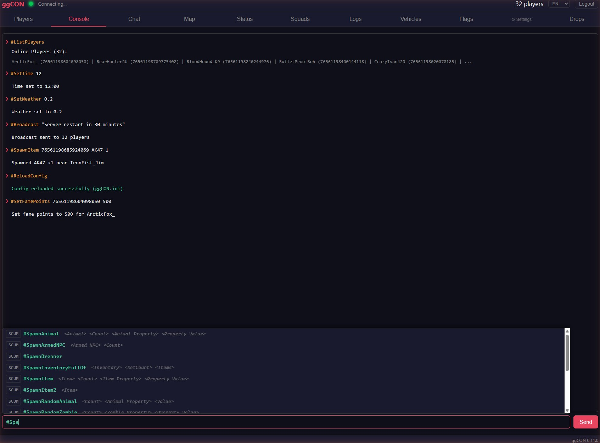
Chat¶
Real-time chat viewer showing all in-game chat messages.
- Channel colors — messages are tagged with colored pills matching in-game colors: white (Local), blue (Global), green (Squad), gold (Admin), gray (System)
- Clickable player names — click a player's name to open their detail popup
- Broadcast input — type a message and click Broadcast to send to all players
Method dropdown — select the notification delivery method:
| Method | Description |
|---|---|
| Chat | Standard in-game chat message. Choose a color from the color picker (Yellow, White, Cyan, Green, Red) |
| Warning | Center-screen notification. Choose a custom color from the color picker and set display duration in seconds |
| Kill Feed | Bottom-center notification with prefix, name, and suffix fields. Toggle the sound on or off |
| HUD | Bottom-left overlay notification. Does not appear in chat — ideal for non-intrusive alerts |
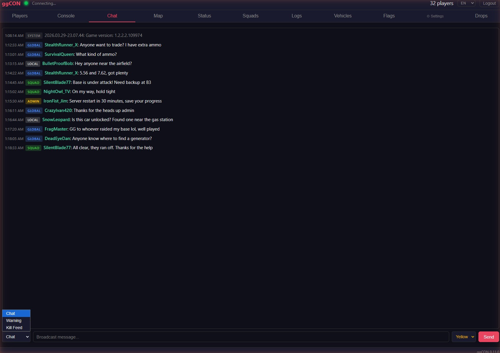
Map¶
Live map showing player and vehicle positions on the SCUM island. The map uses a 14K tiled image with 7 zoom levels for smooth navigation.
Players:
- Player dots — green for regular players, red for admins
- Name labels — toggle with the "Names" checkbox
- Click a player dot to open their detail popup
Vehicles:
- Vehicle markers — blue squares for all vehicles, orange for rendered (near players)
- Vehicle checkbox — toggle vehicle markers on/off
- Type filter — dropdown next to the Vehicles checkbox filters markers by vehicle class (e.g., "Barba", "Rager"). The list is populated dynamically from the server's vehicle data with counts per type
- Click a vehicle marker to see vehicle details
Flags:
- Flag markers — flag icon markers showing base locations
- Flags checkbox — toggle flag markers on/off in the map toolbar
- Click a flag marker to see flag details (owner, base name, element count, location)
Measurement tool:
- Click the ruler/measure button in the map toolbar to enter measurement mode
- First click places point A, second click places point B
- Displays distance in meters (or km for distances over 1,000 m) with a dashed line between points
- Click again to start a new measurement
- Press Escape or click the measure button again to exit measurement mode
Right-click menu:
- Right-click anywhere on the map to open a context menu
- Copy Coordinates — copies the world coordinates at that location
- Teleport Player — teleport any online player to the clicked location
Map controls:
- Drones — drone players are shown as purple markers; toggle visibility in the Layers panel under Player Names
- Layers dropdown — floating panel with toggle switches for each layer (Players, Names, Drones, Vehicles, Flags, Grid) with green dot indicators for active layers
- Marker size slider — adjust the size of player and vehicle markers
- Mouse coordinates — world coordinates shown as you move the cursor
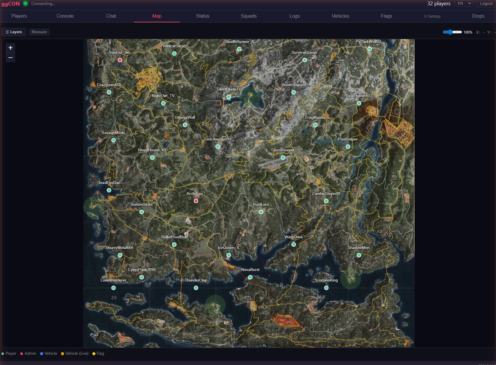
Vehicles¶
Full vehicle list with sortable columns and filtering.
Columns (click to sort A→Z / Z→A):
| Column | Description |
|---|---|
| ID | Vehicle entity ID |
| Name | Vehicle class name. Green dot indicates the vehicle is rendered (near a player) |
| Owner | Owner's character name, or "None" if unowned |
| Location | World coordinates (X, Y) |
| Actions | Details button to open vehicle popup |
Filter bar — type to filter vehicles by name, owner, or ID.
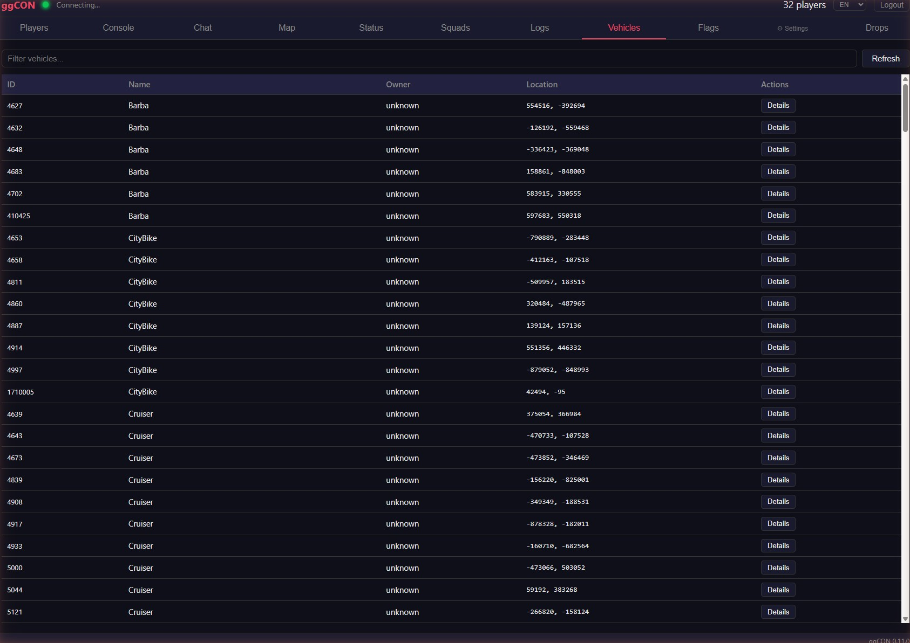
Vehicle detail popup:
- Vehicle ID, class, and owner
- World coordinates
- Spawn date (when the vehicle was spawned)
- Live/database position indicator
- Show on Map — switches to the Map tab and flies to the vehicle's location
- Destroy Vehicle — destroys the vehicle (with confirmation dialog)
- Show Owner — opens the owner's player detail popup (if owner is online) or offline card
Flags¶
Searchable list of all base building flags on the server.
| Column | Description |
|---|---|
| Flag ID | Unique flag identifier |
| Owner | Owner's character name (clickable — opens player detail popup) |
| Base Name | Name of the base |
| Location | World coordinates (X, Y) |
| Elements | Current / maximum building elements |
| Expanded | Number of expanded elements |
Filter bar — type to filter flags by owner name, base name, or flag ID.
Refresh button — forces an immediate reload of flag data.
Flag data auto-refreshes every 30 seconds.
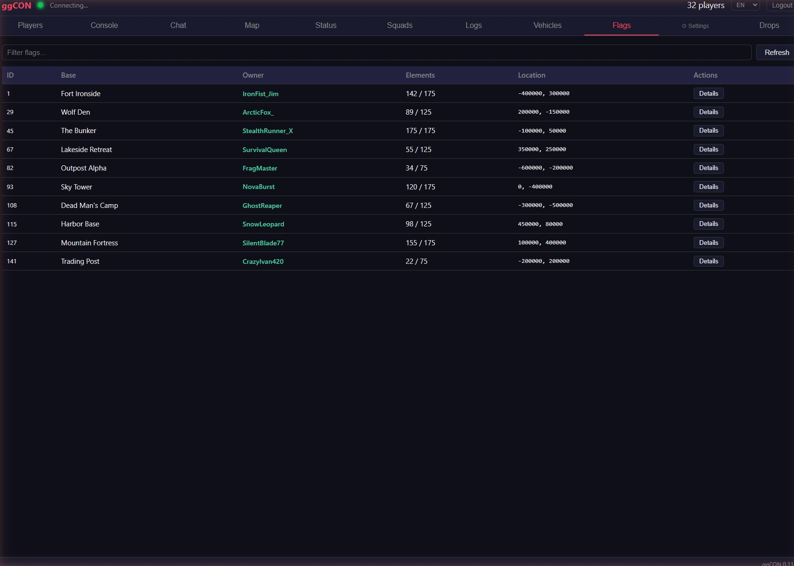
Squads¶
Full squad list with member details and management actions.
- Squad list — all squads with name, score, member count, and online indicator (green dot when any member is online)
- Online squads are sorted to the top
- Click a squad to expand and see members with their rank, online/alive/danger status
- Refresh — forces a reload of squad data from the database
- Remove Member — removes a player from their squad
- Delete Squad — removes all members and destroys the squad
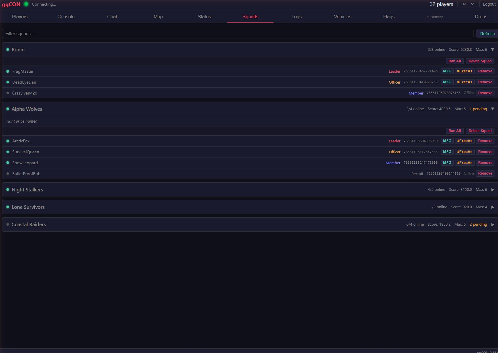
Logs¶
Real-time log viewer for SCUM server log files.
- Source filters — pill-style buttons to toggle log sources (chat, kill, admin, economy, login, etc.) with color coding
- Text filter — type to filter log lines by content
- SCUM source — off by default (verbose game engine output)
- Auto-scroll — new lines appear at the bottom with automatic scrolling
- Max 1000 lines — older lines are pruned as new ones arrive
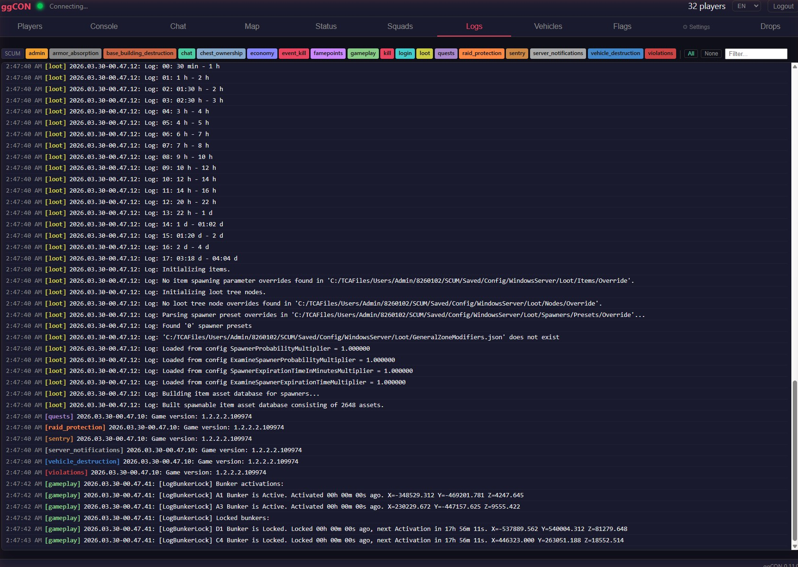
Plugin Tabs¶
Loaded plugins that provide a panel tab appear in the sidebar under the "Plugins" divider. Plugin tabs have a subtly different style to distinguish them from core tabs. You can drag plugin tabs to reorder them — your preferred order is saved across sessions. See Plugins for details on available plugins.
Settings¶
Click the Settings button in the sidebar to access settings, plugin management, and updates.
- Settings — manage authentication, allowed IPs, Discord webhooks, executor selection, and other runtime settings. Changes take effect immediately.
- Plugins — install, update, and uninstall plugins from the marketplace. See Plugins for details.
- Updates — check for ggCON updates and stage them for installation on the next server restart. See Auto-Update for details.
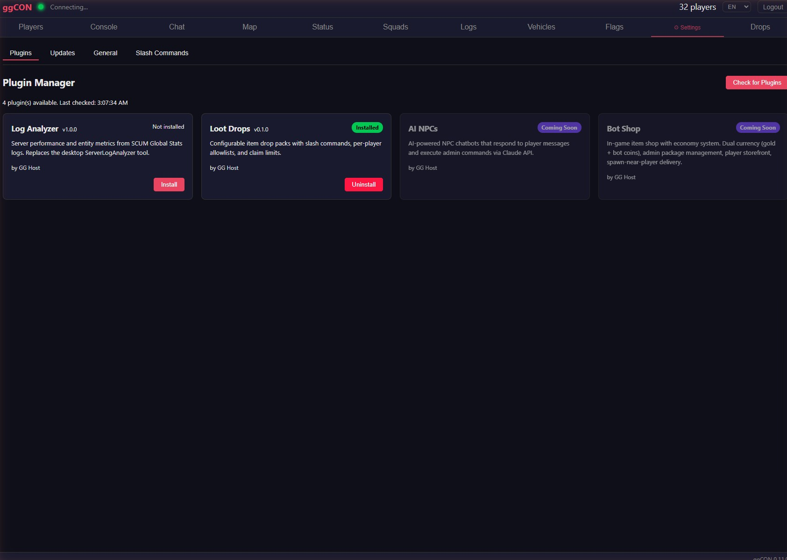
Give Item¶
The Give Item button (available in the player detail popup) opens an item picker modal:
- Search — type to instantly search across 6,000+ SCUM items
- Category filter — dropdown to filter by item category
- Quantity — set how many to spawn (default: 1)
- Click an item to spawn it for the selected player
The item is spawned directly into the player's vicinity. No database modifications are required.
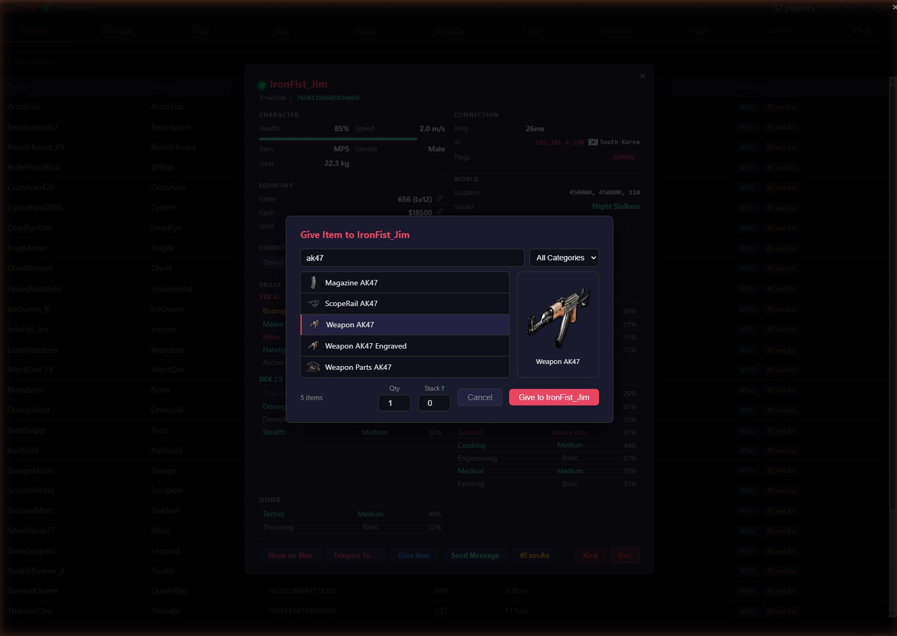
Give Vehicle¶
The Give Vehicle button (available in the player detail popup) opens a vehicle picker modal showing all 19 vehicle types with their in-game icons.
- Browse the vehicle list — each entry shows the vehicle name and icon
- Click a vehicle to spawn it near the selected player
The vehicle appears in the player's vicinity. Vehicle types are loaded from the game engine automatically.
Spawn Entities¶
The Spawn Entities button (available in the player detail popup) opens a tabbed picker for spawning AI entities near a player.
Tabs:
| Tab | Entity types |
|---|---|
| Zombies | 30 zombie variants (military, civilian, etc.) |
| Animals | 14 animal types (bear, boar, deer, etc.) |
| Armed NPCs | 20 armed NPC variants |
| Brenner | Spawns a Brenner (no variants) |
| Razor | Spawns a Razor (no variants) |
Each tab shows a searchable list with humanized names. Click an entity to spawn it near the selected player.
Teleport from Map¶
The Teleport To... button in the player detail popup opens the map in teleport mode:
- Click Teleport To... on any online player
- The map opens with a red banner showing the target player's name and a Cancel button
- The cursor changes to a crosshair
- Click anywhere on the map to select a destination
- A confirmation dialog shows the target coordinates — click OK to teleport, or Cancel to pick a different spot
- The teleport command executes and the result appears in the Console tab
Press Escape or click Cancel in the banner to exit teleport mode without teleporting.
#ExecAs Button¶
The #ExecAs button (available in the player list and detail popup) lets you execute an admin command in the context of a specific player. The player's Steam ID is automatically filled in — you just type the command.
For example, clicking #ExecAs on a player and typing Knockout 10 will execute:
This is useful for commands that target a specific player, such as teleporting, spawning items near them, or applying effects.